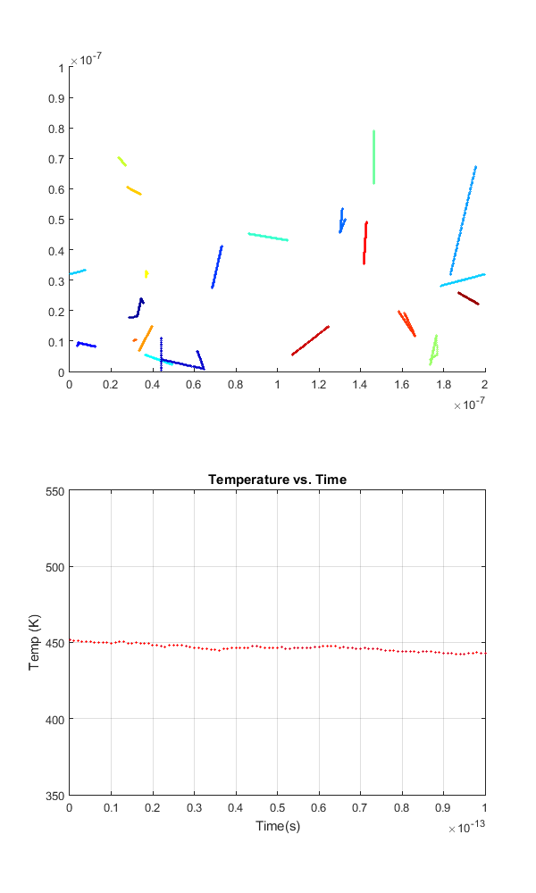
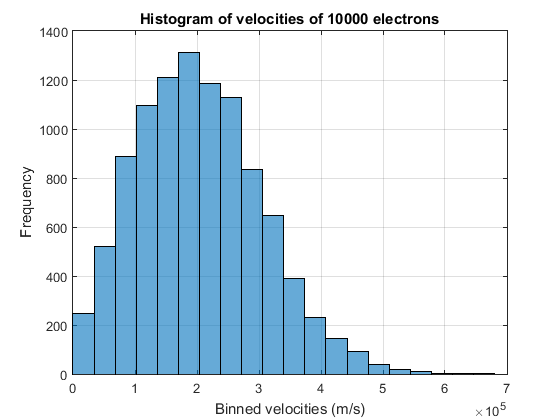

C.m_0 = 9.10938215e-31;
C.kb = 1.3806504e-23;
nElectrons = 10000;
nPlot = 20;
T = 300;
L = 200e-9;
W = 100e-9;
MarkerSize = 1;
dt = 1e-15;
TStop = 0.1e-12;
Vth = sqrt(2*C.kb*T/(C.m_0*0.26));
time = 0;
Temp = T;
taumn = 0.2e-12;
sigmaMB = sqrt(C.kb*T/(C.m_0*0.26));
cc = jet(nPlot);
collisionT = zeros(200,nElectrons);
collisionV = zeros(200,nElectrons);
collisionIndex = ones(1,nElectrons);
collisions = 0;
x = rand(1, nElectrons)*L;
y = rand(1, nElectrons)*W;
Theta = rand(1, nElectrons)*2*pi;
Vx = cos(Theta).*(Vth + sigmaMB*randn(1, nElectrons));
Vy = sin(Theta).*(Vth + sigmaMB*randn(1, nElectrons));
avgV = sum(sqrt(Vx.^2+Vy.^2))/nElectrons
figure(2)
hFig = figure(2);
set(hFig, 'Position', [500 0 600 1000])
for i=0:dt:TStop
time = i;
subplot(2,1,1);
hold on
for j=1:nPlot
plot(x(j), y(j), 'o','markers', 1, 'Color', cc(j,:));
end
axis([0 L 0 W]);
V2tot=Vx.*Vx+Vy.*Vy;
KE = mean(V2tot)*0.5*(C.m_0*0.26);
Temp = KE/C.kb;
subplot(2,1,2);
plot(time,Temp, 'ro', 'markers',1,'MarkerFaceColor', 'b');
hold on
axis([0 TStop 350 550]);
xlabel('Time(s)');
ylabel('Temp (K)');
grid on
title('Temperature vs. Time');
x = x - dt * Vx;
y = y - dt * Vy;
for j=1:nElectrons
if x(j) > L
x(j) = x(j) - L;
elseif x(j) < 0
x(j) = x(j) + L;
end
if y(j) > W
Vy(j) = -Vy(j);
elseif y(j) < 0
Vy(j) = -Vy(j);
end
end
for j=1:nElectrons
if (1-exp(-dt/taumn)) > rand()
collisions = collisions+1;
collisionT(collisionIndex(j)+1,j) = time;
collisionV(collisionIndex(j)+1,j) = sqrt(Vx(j)^2+Vy(j)^2);
collisionIndex(j)=collisionIndex(j)+1;
Theta = rand(1, 1)*2*pi;
Vx(j) = cos(Theta)*(Vth + sigmaMB*randn(1, 1));
Vy(j) = sin(Theta)*(Vth + sigmaMB*randn(1, 1));
end
end
pause(0.000001)
end
figure(3)
histogram(sqrt(Vx.^2+Vy.^2), 20);
hold on
xlabel('Binned velocities (m/s)');
ylabel('Frequency');
grid on
title('Histogram of velocities of 10000 electrons');
hold off
MFP=0;
TBC=0;
for i=1:nElectrons
for j=1:collisionIndex(i)
if j ~= 1
TBC = TBC + collisionT(j,i)-collisionT(j-1,i);
MFP = MFP + (collisionT(j,i)-collisionT(j-1,i))*(collisionV(j,i)-collisionV(j-1,i));
end
end
end
TBC = TBC/collisions
MFP = MFP/collisions
avgV =
2.0572e+05
TBC =
4.1747e-14
MFP =
7.2041e-09
 